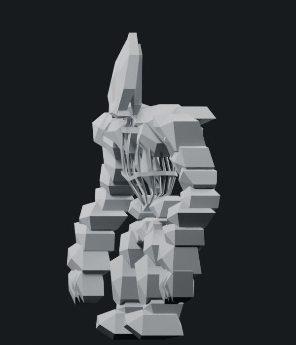
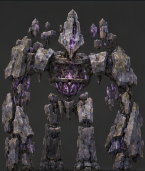
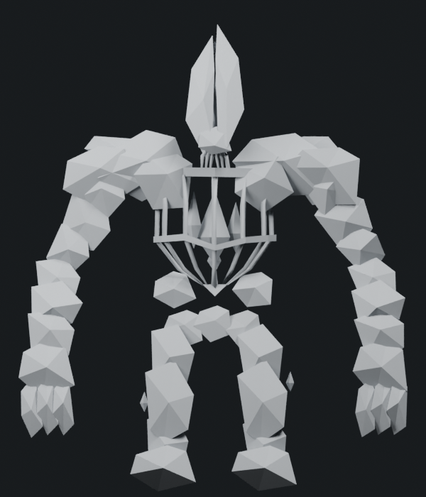
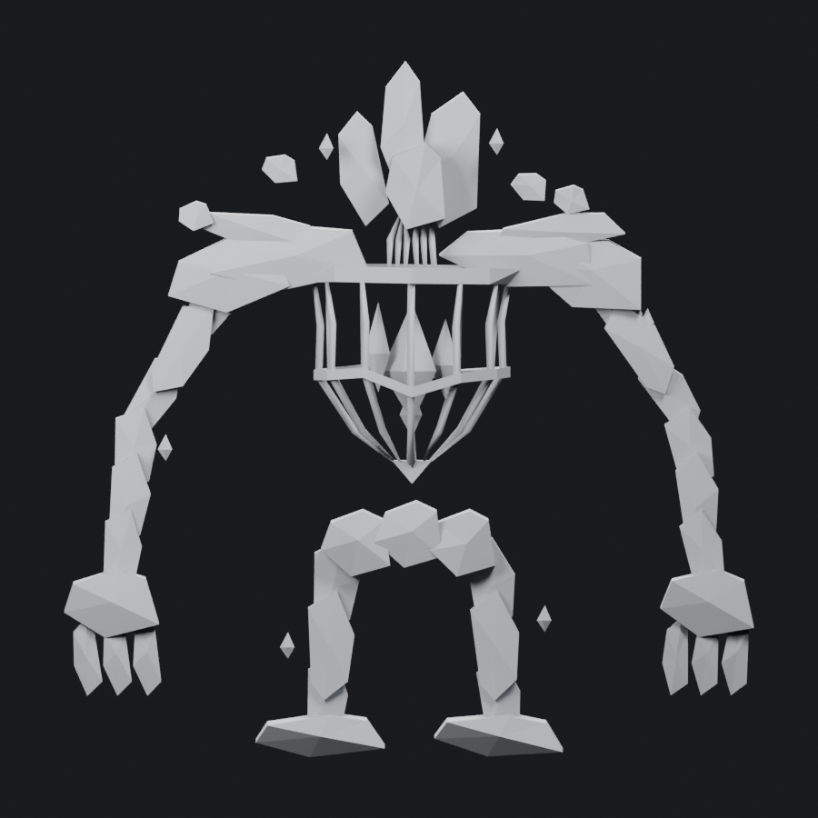
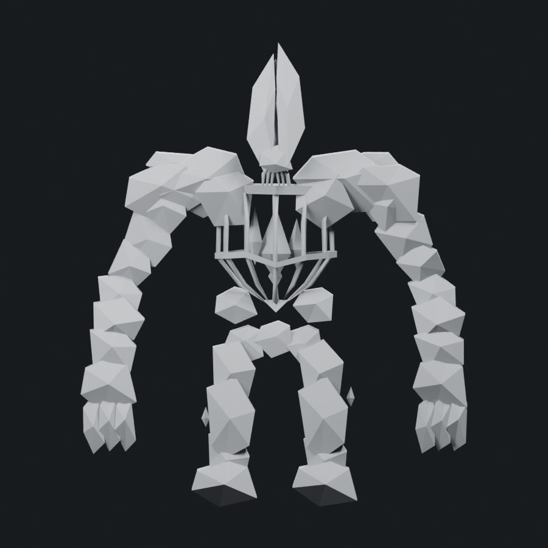

This pass concentrates on shape. The frontal fit has one long fractured head with an uneven central peak, broader shoulder and limb stone masses, a narrower overall arm spread and a revised head/body/leg proportion. Four former floating stones now form paired upper and lower torso masses. The side fit gives the stone plates tapered depth, a forward head and cage, and fuller knees and feet. The two closed torso rings and continuous ribs remain.
Side direction is fixed: front/head left, back right. The saved models are rendered from that side; a projection check rejects the opposite-facing camera. The r5/r6 comparisons were corrected as well.
1,800 triangles · 1.500× native Stone Golem · soft cap 1,800. One mesh/material and four 512px maps. All fifty support contacts pass 35 sampled action poses. The original eight-bone hierarchy and seven actions remain, with rest positions fitted to the revised shape. This is a silhouette candidate for visual review; texture detail is deferred.






The silhouette is under review. The concept's finer fractured edges and surface weathering remain unfinished; no exact-match or adequate boss acceptance is inferred from the checks. Native admission, full animation deformation and live performance remain separate.
Editable Blender model · Skinned export · Surface view · Torso close-up · Attack pose · Geometry/export checks · Support checks · Saved proportions · Side orientation · Shape changes · Source provenance